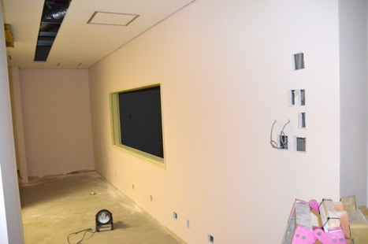
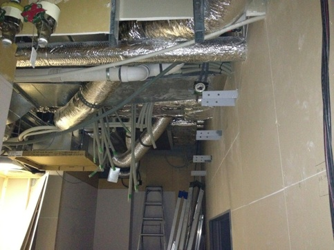
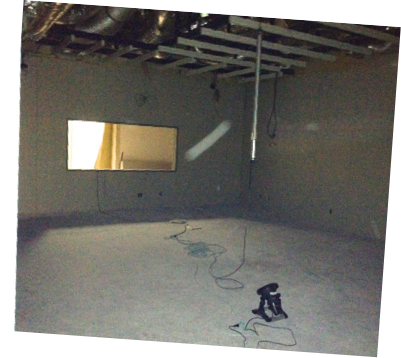
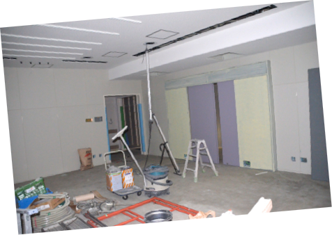
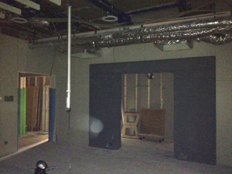
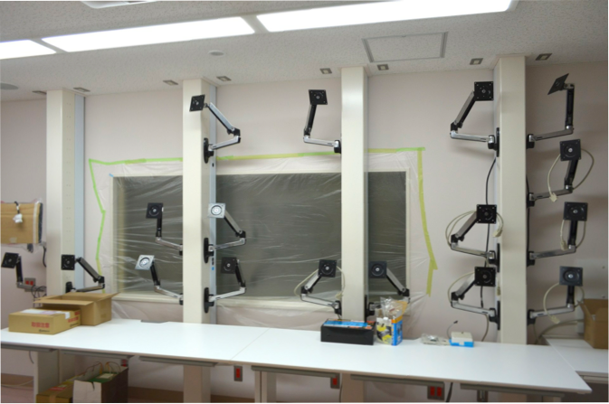
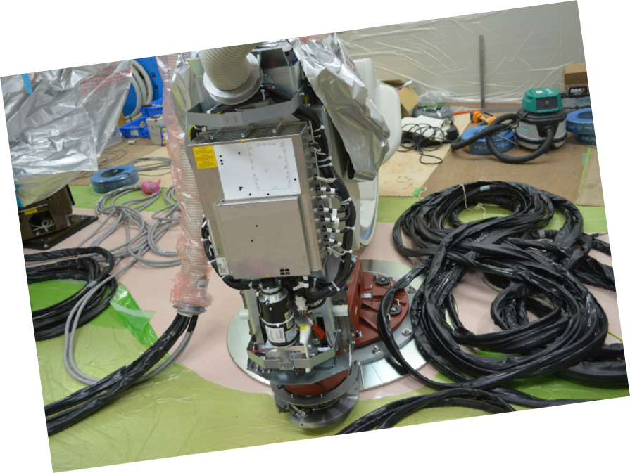
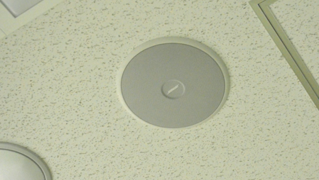

カテーテル検査室「カテ室五番」ができるまで
2012/1 〜 3月
カテーテル検査室「カテ室五番」ができるまで
2012/1 〜 3月










もともと手術室のベット置き場だった
スペースと，カテ室の更衣室，シャワー室だった場所をつぶして，新しいカテーテル検査室のスペースを作りました．
天井は手術室へのダクトが入り乱れていて，非常に複雑な構造になっており，
アンギオ装置をどの場所に天吊りするかなど，天井の設計には大きく影響しました．
患者さんが出入りする扉ができてきました．
天井にはほとんどスペースがなく，
すごいことになっています．
操作室です．カテ室内とのケーブルが無数にのびてきています．
カテ室内の天井がようやくおさまってきました．
何もないと結構大きな空間です．
操作室の天井もふさがり，形ができてきました．
今回のカテ室の大きな特徴は，操作室のモニターを床置きにしないこと．
そのために，操作室に４本の太い柱を配置しました．柱の中に，ディスプレーケーブル，電源ケーブルを配線し，モニターを自由に配置できるように設計しています．
オクラホマ大学のアブレーションカテーテル検査室を参考にしました．
いよいよアンギオ装置が
搬入されました．
ドイツから空輸されてきた
シーメンス社の装置です．
56インチモニターも天吊り
されましたが，反対側を
向いていてまだ全容を
みることができません．

アンギオ装置の搬入を初めて見ましたが，すごく複雑で精密な機械であることがうかがえます．
こんな状態のアンギオ装置は初めて見ました．
モニターのアームが取り付けられました．
その異様な光景に，千手観音のようだという意見も．．．
右の柱には，見学者用モニターとして3面のモニターを設置予定です．
モニターが取り付けられるのが楽しみです．
音響システムについては，ヨドバシカメラで試聴して選びました，Boseの天井埋め込み型スピーカーをカテ室内と操作室に2セット設置して，マランツのミニコンポのアンプで鳴らしています．
となりに同じ形をした業務用スピーカーが配置されていて，小さなロゴでしか区別ができず地味な感じですが，なかなかいい音を鳴らしてくれています．
